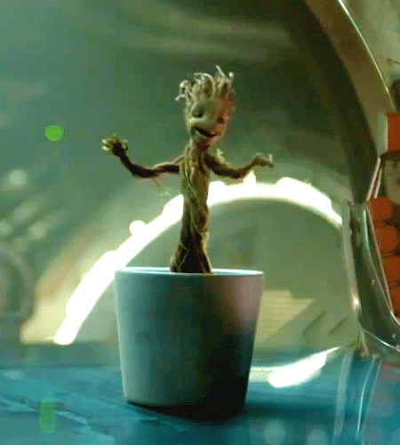

I am Groot. More specifically, baby Groot. I sacrificed myself by protecting my fellow Guardians in a sanctuary made out of my branches. After I was destroyed, my best friend Rocket Raccoon planted one of my remaining branches and took care of me. I have since regenerated and now live in a pot as a tiny superhero. I also love to dance!
More information can be found here: Guardians of the Galaxy